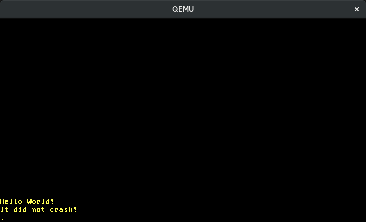

하드웨어 인터럽트
번역된 내용 : 이것은 커뮤니티 멤버가 Hardware Interrupts 포스트를 번역한 글입니다. 부족한 설명이나 오류, 혹은 시간이 지나 더 이상 유효하지 않은 정보를 발견하시면 제보해주세요!
이 글에서는 프로그래밍 할 수 있는 인터럽트 컨트롤러가 인터럽트들을 CPU로 정확히 전달하도록 설정할 것입니다. 새로운 인터럽트들을 처리하기 위해 인터럽트 서술자 테이블 (interrupt descriptor table)에 새로운 엔트리들을 추가할 것입니다 (이전에 예외 처리 함수를 등록했듯이). 또한 일정 주기마다 타이머 인터럽트를 일으키는 방법 및 키보드 입력 받는 방법도 알아볼 것입니다.
이 블로그는 GitHub 저장소에서 오픈 소스로 개발되고 있으니, 문제나 문의사항이 있다면 저장소의 ‘Issue’ 기능을 이용해 제보해주세요. 페이지 맨 아래에 댓글을 남기실 수도 있습니다. 이 포스트와 관련된 모든 소스 코드는 저장소의 post-07 브랜치에서 확인하실 수 있습니다.
목차
🔗개요
CPU에 연결된 주변 장치들은 인터럽트를 통해 CPU에 알림을 보낼 수 있습니다. 그래서 커널이 주기적으로 키보드 입력이 들어왔는지 확인하게 하는 대신 (이를 폴링(polling) 방식이라고 합니다), 키보드 입력이 들어올 때마다 키보드가 직접 커널에 알림을 보낼 수 있습니다. 이 방식을 사용하면 이벤트 발생 시에만 커널이 행동을 취하면 되므로 에너지 효율성이 더 좋습니다. 또한 이벤트가 발생 시 커널이 다음 poll까지 기다리지 않고 바로 반응할 수 있기에 이벤트에 대한 반응 속도도 더 빠릅니다.
하드웨어 장치들을 모두 CPU에 직접 연결하는 것은 불가능합니다. 대신 별도의 인터럽트 컨트롤러 (interrupt controller) 가 주변 장치로부터 전송된 인터럽트들을 수합한 뒤 CPU에 알림을 보냅니다.
____________ _____
Timer ------------> | | | |
Keyboard ---------> | Interrupt |---------> | CPU |
Other Hardware ---> | Controller | |_____|
Etc. -------------> |____________|
대부분의 인터럽트 컨트롤러들은 프로그래밍을 통해 인터럽트마다 다른 우선순위 레벨을 배정하는 것이 가능합니다. 예를 들어, 키보드 인터럽트보다 타이머 인터럽트에 더 높은 우선순위 레벨을 배정하여 CPU에서 시간을 더 정확히 측정할 수 있습니다.
예외와 달리 하드웨어 인터럽트는 비동기적으로 (asynchronously) 일어납니다. 즉 CPU에서 실행 중인 코드와 별개로 인터럽트는 언제든 발생할 수 있다는 것입니다. 따라서, 커널에 인터럽트를 도입하면서 동시성(concurrency)의 형태가 등장하고 동시성 관련 버그 발생의 가능성도 생깁니다. Rust의 엄격한 소유권 (ownership) 모델이 전역 가변 변수 사용을 금지해 동시성 관련 버그 발생 가능성을 줄여주지만, 교착 상태(deadlock)를 막아주지는 못하며 이는 본문 아래에서 곧 확인하실 수 있습니다.
🔗8259 PIC
Intel 8259 는 프로그래밍 가능한 인터럽트 컨트롤러 (PIC; Programmable Interrupt Controller)이며, 1976년에 처음 도입되었습니다. 이 장치는 오래전에 신형 장치 APIC로 대체됐지만, 이전 버전과의 호환성 유지를 위해 그 인터페이스만은 최신 시스템들도 지원하고 있습니다. 8259 PIC를 다루는 것이 APIC를 다루는 것보다 쉽습니다. 그렇기에 인터럽트에 대해 배우고 입문하는 현재 단계에서는 8259 PIC를 쓰고, 이 블로그 시리즈의 이후 글에서는 APIC로 교체하여 사용하겠습니다.
Intel 8259 PIC는 8개의 인터럽트 통신선과 CPU와 통신하기 위한 몇 개의 통신선을 가집니다. 과거의 전형적인 PC 시스템은 8259 PIC를 2개 장착하고 있었는데 (주 PIC와 부 PIC), 주 PIC의 인터럽트 통신선 중 하나를 부 PIC에 연결했습니다.
____________ ____________
Real Time Clock --> | | Timer -------------> | |
ACPI -------------> | | Keyboard-----------> | | _____
Available --------> | Secondary |----------------------> | Primary | | |
Available --------> | Interrupt | Serial Port 2 -----> | Interrupt |---> | CPU |
Mouse ------------> | Controller | Serial Port 1 -----> | Controller | |_____|
Co-Processor -----> | | Parallel Port 2/3 -> | |
Primary ATA ------> | | Floppy disk -------> | |
Secondary ATA ----> |____________| Parallel Port 1----> |____________|
위 도표는 인터럽트 통신선을 배정하는 전형적인 방식을 보여줍니다. 15개의 선 중 대부분은 어떤 장치와 연결할지 이미 정해져 있습니다. 예를 들어, 부 PIC의 4번 통신선은 마우스에 연결됩니다.
각 컨트롤러는 “command” 포트와 “data” 포트, 이 2개의 입출력 포트들을 사용해 설정합니다. 주 PIC는 0x20번 포트가 command 포트, 0x21번 포트가 data 포트입니다. 부 PIC는 0xa0번 포트가 command 포트, 0xa1 포트가 data 포트입니다. PIC를 설정하는 자세한 방법에 대해서는 osdev.org의 글을 찾아보시길 바랍니다.
🔗구현
위 PIC들의 기본 설정에서 PIC는 0-15 구간의 인터럽트 벡터 번호를 CPU에 전송합니다. IDT에서 이 구간의 인터럽트 벡터 번호들은 이미 CPU 예외들에 배정되어 있기에, PIC의 기본 설정을 그대로 사용하지 못합니다. 예를 들면 벡터 번호 8은 더블 폴트에 배정되어 있습니다. 벡터 번호가 중복되는 문제를 해결하려면 PIC가 전송하는 인터럽트들을 다른 벡터 번호에 재배정 해야 합니다. 기존 예외들의 벡터 번호와 겹치지 않는 이상 인터럽트들에 어떤 번호를 배정하는지는 크게 중요하지 않습니다만, 예외들에 배정된 첫 32개의 슬롯 다음 비는 32-47 구간의 벡터 번호를 고르는 것이 일반적입니다.
PIC 장치의 command 포트 및 data 포트에 특수한 값을 쓰면 장치 설정을 변경할 수 있습니다. 운 좋게도 pic8259 크레이트 덕에 우리가 장치 설정 초기화/변경 로직을 직접 작성할 필요는 없습니다. 작동 원리가 궁금하시다면 해당 크레이트의 소스 코드를 직접 확인해보세요. 코드양이 많지 않고 문서화도 잘 되어 있습니다.
의존 크레이트로 해당 크레이트를 추가하기 위해 아래의 코드를 추가합니다.
# in Cargo.toml
[dependencies]
pic8259 = "0.10.1"
이 크레이트의 ChainedPics 구조체는 위에서 봤던 주/부 PIC 연결 방식을 적절한 추상 레벨에서 표현합니다. 이 구조체는 아래처럼 사용하도록 설계되었습니다.
// in src/interrupts.rs
use pic8259::ChainedPics;
use spin;
pub const PIC_1_OFFSET: u8 = 32;
pub const PIC_2_OFFSET: u8 = PIC_1_OFFSET + 8;
pub static PICS: spin::Mutex<ChainedPics> =
spin::Mutex::new(unsafe { ChainedPics::new(PIC_1_OFFSET, PIC_2_OFFSET) });
위에서 언급했듯이 PIC들이 사용할 벡터 번호의 오프셋을 32-47 구간에서 선택합니다. ChainedPics 구조체를 감싼 Mutex의 lock 함수를 통해 안전하게 값을 수정할 수 있는데, 이는 다음 단계에서 유용합니다. ChainedPics::new 함수에 잘못된 오프셋을 넘기면 undefined behavior가 일어날 수 있어 이 함수는 unsafe 함수로 정의되었습니다.
이제 init 함수에서 8259 PIC 장치를 초기화할 수 있습니다.
// in src/lib.rs
pub fn init() {
gdt::init();
interrupts::init_idt();
unsafe { interrupts::PICS.lock().initialize() }; // 새로 추가함
}
initialize 함수를 사용해 PIC 장치를 초기화합니다. PIC 장치를 잘못 초기화하면 undefined behavior를 일으킬 수 있으므로, ChainedPics::new 함수와 마찬가지로 이 함수도 unsafe 함수로 정의되었습니다.
추가한 코드에 문제가 없었다면, 다시 cargo run을 실행해도 예전처럼 “It did not crash“라는 메시지가 출력될 것입니다.
🔗인터럽트 활성화하기
CPU 설정에서 인터럽트 사용이 해제되어 있었기에 아직 아무 일도 일어나지 않았습니다. 인터럽트 사용이 해제되어 있으면 CPU는 인터럽트 컨트롤러부터 오는 신호를 전혀 받지 않고, 따라서 어떤 인터럽트도 CPU에 도달할 수 없습니다. CPU 설정을 바꿔보겠습니다.
// in src/lib.rs
pub fn init() {
gdt::init();
interrupts::init_idt();
unsafe { interrupts::PICS.lock().initialize() };
x86_64::instructions::interrupts::enable(); // 새로 추가함
}
x86_64 크레이트의 interrupts::enable 함수는 sti 명령어 (“set interrupts”)를 실행해 외부 인터럽트를 사용하도록 설정합니다. 이제 cargo run을 실행하면 더블 폴트가 발생하는 것을 확인할 수 있습니다.

더블 폴트가 발생하는 이유는, Intel 8253 장치에서 기본적으로 하드웨어 타이머를 사용하도록 설정이 되어 있고, CPU에서 인터럽트 사용을 활성화한 직후부터 타이머 인터럽트가 CPU로 전송되기 때문입니다. 우리가 아직 타이머 인터럽트 처리 함수를 정의하지 않았기 때문에 더블 폴트 처리 함수가 호출됩니다.
🔗타이머 인터럽트 처리하기
위 도표를 보면 타이머는 주 PIC의 0번 통신선을 사용합니다. 이는 즉 타이머 인터럽트가 CPU에 인터럽트 벡터 번호가 32 (0 + 오프셋 32)인 인터럽트로 전송된다는 것을 뜻합니다. 코드에 번호 32를 그대로 적지 않고 InterruptIndex enum에 저장합니다.
// in src/interrupts.rs
#[derive(Debug, Clone, Copy)]
#[repr(u8)]
pub enum InterruptIndex {
Timer = PIC_1_OFFSET,
}
impl InterruptIndex {
fn as_u8(self) -> u8 {
self as u8
}
fn as_usize(self) -> usize {
usize::from(self.as_u8())
}
}
C언어의 enum처럼 이 enum은 각 분류에 사용할 인덱스 값을 지정할 수 있습니다. repr(u8) 속성은 해당 enum을 u8 타입으로서 저장 및 표현되도록 합니다. 향후에 새로운 인터럽트들을 지원해야 할 때 이 enum에 새로운 분류를 추가할 것입니다.
이제 타이머 인터럽트를 처리할 함수를 작성할 수 있습니다.
// in src/interrupts.rs
use crate::print;
lazy_static! {
static ref IDT: InterruptDescriptorTable = {
let mut idt = InterruptDescriptorTable::new();
idt.breakpoint.set_handler_fn(breakpoint_handler);
[…]
idt[InterruptIndex::Timer.as_usize()]
.set_handler_fn(timer_interrupt_handler); // 새로 추가함
idt
};
}
extern "x86-interrupt" fn timer_interrupt_handler(
_stack_frame: InterruptStackFrame)
{
print!(".");
}
timer_interrupt_handler 함수는 우리가 가진 다른 예외 처리 함수들과 같은 함수 원형을 가지는데, 그 이유는 CPU가 예외와 인터럽트에 같은 방식으로 대응하기 때문입니다 (유일한 차이점은 일부 예외들이 오류 코드를 추가로 push한다는 것). InterruptDescriptorTable 구조체는 IndexMut 트레이트를 구현해서 배열을 색인하는 것과 동일한 문법을 써서 테이블의 각 엔트리에 접근할 수 있습니다.
우리가 작성한 타이머 인트럽트 처리 함수는 화면에 점을 출력합니다. 타이머 인터럽트는 주기적으로 발생하므로, 타이머 주기마다 화면에 새로운 점이 출력되기를 기대하는 것이 자연스럽습니다. 하지만 커널을 실행해 보면 화면에 점이 단 1개만 출력될 것입니다.

🔗End of Interrupt
점이 1개만 출력되는 이유는 PIC가 인터럽트 처리 함수로부터 명시적으로 “end of interrupt” (EOI) 신호가 전송되어 오기를 기다리기 때문입니다. 이 신호는 PIC에 해당 인터럽트가 처리되었으며 시스템이 다음 인터럽트를 받을 준비가 된 것을 알립니다. 신호를 받지 못한 PIC는 시스템이 아직 첫 타이머 인터럽트를 처리 중이라 생각하고 EOI 신호가 올 때까지 다음 인터럽트를 보내지 않고 기다리는 것입니다.
static으로 선언된 PICS 구조체를 다시 사용해 EOI 신호를 보냅니다.
// in src/interrupts.rs
extern "x86-interrupt" fn timer_interrupt_handler(
_stack_frame: InterruptStackFrame)
{
print!(".");
unsafe {
PICS.lock()
.notify_end_of_interrupt(InterruptIndex::Timer.as_u8());
}
}
notify_end_of_interrupt 함수는 주 PIC와 부 PIC 중 누가 인터럽트를 보냈었는지 파악하고, 그 후 command 포트와 data 포트를 사용해 인터럽트를 전송했던 PIC로 EOI 신호를 보냅니다. 부 PIC가 인터럽트를 보냈었다면, 부 PIC가 주 PIC의 입력 통신선에 연결되어 있다 보니 두 PIC 모두 EOI 신호를 받게 됩니다.
여기서 우리는 올바른 인터럽트 벡터 번호를 사용하도록 주의해야 합니다. 잘못된 번호를 쓰면, 아직 CPU로 전송하지 않은 중요한 인터럽트가 소실되거나 시스템이 아무 반응도 하지 않게 될 수 있습니다. 이런 이유로 notify_end_of_interrupt 함수가 unsafe로 선언된 것입니다.
다시 cargo run을 실행하면 화면에 주기적으로 점이 찍히는 것을 확인할 수 있습니다.

🔗타이머 설정하기
우리가 쓰는 하드웨어 타이머는 Programmable Interval Timer, 또는 줄여서 PIT라고 부릅니다. 이름에서 알 수 있듯이, 프로그래밍을 통해 인터럽트 사이 시간 간격을 조정할 수 있습니다. 곧 APIC 타이머로 교체해 사용할 것이기 때문에 PIT에 대해 자세히 다루지는 않겠습니다만, OSDev 위키에 PIT를 설정하는 방법에 대한 자세한 글이 있으니 참고하시기 바랍니다.
🔗교착 상태 (Deadlock)
이제 우리의 커널에 동시성의 개념이 등장했습니다. 타이머 인터럽트는 비동기적으로 발생하기에 _start 함수 실행 중 언제든 발생할 수 있습니다. Rust의 소유권 (ownership) 시스템이 다양한 동시성 관련 버그를 컴파일 시간에 방지하지만, 교착 상태는 막지 못합니다. 스레드(thread)가 해제되지 않을 lock을 얻으려고 할 때 교착 상태가 일어나며, 해당 스레드는 영원히 대기 상태에 갇히게 됩니다.
현재 우리의 커널에서 교착 상태를 일으킬 수 있습니다. 우리가 쓰는 println 매크로가 호출하는 vga_buffer::_print 함수는 스핀 락(spinlock)을 통해 전역 변수 WRITER에 대한 lock을 잠급니다.
// in src/vga_buffer.rs
[…]
#[doc(hidden)]
pub fn _print(args: fmt::Arguments) {
use core::fmt::Write;
WRITER.lock().write_fmt(args).unwrap();
}
위 함수는 WRITER에 대한 lock을 잠그고 write_fmt를 호출하며, 위 함수의 반환 직전에 WRITER에 대한 lock을 암묵적으로 해제합니다. WRITER에 대한 lock이 잠긴 상태에서 인터럽트가 발생하고, 해당 인터럽트의 처리 함수가 화면에 뭔가 출력하려 한다고 가정해봅시다.
| 시간 순서 | _start | 인터럽트 처리 함수 |
|---|---|---|
| 0 | println! 호출 | |
| 1 | print가 WRITER를 잠금 | |
| 2 | 인터럽트 발생, 인터럽트 처리 함수 실행 시작 | |
| 3 | println! 호출 | |
| 4 | print가 이미 잠긴 WRITER를 또 잠그려고 함 | |
| 5 | print가 이미 잠긴 WRITER를 또 잠그려고 함 | |
| … | … | |
| never | WRITER 잠금 해제 |
WRITER에 대한 lock이 잠겨 있으니, 인터럽트 처리 함수는 해당 lock이 풀릴 때까지 기다립니다. 하지만 _start 함수는 인터럽트 처리 함수가 반환한 후에 실행을 재개하기 때문에 lock이 풀리지 않습니다. 그 결과, 시스템 전체가 응답 불가 상태가 됩니다.
🔗교착 상태 일으키기
_start 함수의 맨 마지막 loop 안에서 화면에 출력을 시도하면 쉽게 커널에 교착 상태를 일으킬 수 있습니다.
// in src/main.rs
#[no_mangle]
pub extern "C" fn _start() -> ! {
[…]
loop {
use blog_os::print;
print!("-"); // 새로 추가함
}
}
QEMU에서 실행하면 아래와 같은 출력을 얻게 됩니다.

첫 타이머 인터럽트 발생 전까지는 제한된 수의 붙임표(-)가 출력됩니다. 첫 타이머 인터럽트 후, 타이머 인터럽트 처리 함수가 온점(.)을 출력하려다 교착 상태에 빠지고 시스템은 아무 반응을 하지 않습니다. 이것이 출력 내용에 온점이 전혀 없는 이유입니다.
타이머 인터럽트가 비동기적으로 발생하다보니 커널을 실행할 때마다 출력되는 붙임표의 수가 다를 수 있습니다. 동시성 관련 버그들은 실행 결과가 이렇게 비결정론적(non-deterministic)인 경우가 많아 디버깅하기 쉽지 않습니다.
🔗교착 상태 방지하기
Mutex가 잠긴 동안 인터럽트를 해제하면 교착 상태를 방지할 수 있습니다.
// in src/vga_buffer.rs
/// Prints the given formatted string to the VGA text buffer
/// through the global `WRITER` instance.
#[doc(hidden)]
pub fn _print(args: fmt::Arguments) {
use core::fmt::Write;
use x86_64::instructions::interrupts; // 새로 추가함
interrupts::without_interrupts(|| { // 새로 추가함
WRITER.lock().write_fmt(args).unwrap();
});
}
without_interrupts 함수는 인자로 받은 클로저(closure)를 인터럽트가 없는 환경에서 실행합니다. 이 함수를 통해 Mutex가 잠긴 동안 인터럽트가 발생하지 않게 보장합니다. 커널을 다시 실행하면 커널이 응답 불가 상태에 빠지지 않고 계속 실행되는 것을 확인할 수 있습니다. (화면 스크롤이 너무 빠르게 내려가다 보니 화면에 점이 출력되는 것을 확인하기 어려울 수 있습니다. _start 함수의 loop 안에 for _ in 0..10000 {}를 삽입하는 등의 방법으로 출력 속도를 늦춰 보세요.)
직렬 포트를 이용한 출력 함수 코드 역시 같은 방식으로 수정하여 교착 상태를 방지합니다.
// in src/serial.rs
#[doc(hidden)]
pub fn _print(args: ::core::fmt::Arguments) {
use core::fmt::Write;
use x86_64::instructions::interrupts; // 새로 추가함
interrupts::without_interrupts(|| { // 새로 추가함
SERIAL1
.lock()
.write_fmt(args)
.expect("Printing to serial failed");
});
}
인터럽트를 해제하는 것이 일반적으로 사용할 해결 방식이 아니라는 것을 아셔야 합니다. 인터럽트를 해제하면 인터럽트가 최대로 많이 몰렸을 때 시스템이 인터럽트에 반응할 수 있는 시간 (worst-case interrupt latency)이 늦어집니다. 따라서 인터럽트를 해제하려면 아주 짧은 시간 동안만 해야 합니다.
🔗경쟁 상태 (Race Condition) 예방하기
cargo test를 실행하면 테스트 test_println_output가 때때로 실패하는 것을 확인할 수 있습니다:
> cargo test --lib
[…]
Running 4 tests
test_breakpoint_exception...[ok]
test_println... [ok]
test_println_many... [ok]
test_println_output... [failed]
Error: panicked at 'assertion failed: `(left == right)`
left: `'.'`,
right: `'S'`', src/vga_buffer.rs:205:9
이 테스트가 때때로 실패하는 것은 이 테스트와 우리가 작성한 타이머 처리 함수 간 경쟁 상태 (race condition) 때문입니다. 예전에 작성했던 이 테스트의 코드를 다시 살펴보겠습니다.
// in src/vga_buffer.rs
#[test_case]
fn test_println_output() {
let s = "Some test string that fits on a single line";
println!("{}", s);
for (i, c) in s.chars().enumerate() {
let screen_char = WRITER.lock().buffer.chars[BUFFER_HEIGHT - 2][i].read();
assert_eq!(char::from(screen_char.ascii_character), c);
}
}
이 테스트는 VGA 버퍼에 문자열에 출력한 후 buffer_chars 배열을 직접 순회하여 출력된 내용을 확인합니다. 경쟁 상태가 생기는 이유는, println과 screen_char를 읽는 코드 사이에 타이머 인터럽트 처리 함수가 호출될 수 있기 때문입니다. 이는 컴파일 시간에 Rust가 막아주는 위험한 데이터 레이스 (data race) 와는 다릅니다. 자세한 내용은 Rustonomicon을 참고해주세요.
이 문제를 고치려면 위 테스트가 실행 중에 WRITER에 대한 lock을 계속 잠그고 있어야 합니다. 그렇게 해야 타이머 처리 함수가 그 사이에 .을 출력하지 못합니다. 아래와 같이 테스트를 수정합니다.
// in src/vga_buffer.rs
#[test_case]
fn test_println_output() {
use core::fmt::Write;
use x86_64::instructions::interrupts;
let s = "Some test string that fits on a single line";
interrupts::without_interrupts(|| {
let mut writer = WRITER.lock();
writeln!(writer, "\n{}", s).expect("writeln failed");
for (i, c) in s.chars().enumerate() {
let screen_char = writer.buffer.chars[BUFFER_HEIGHT - 2][i].read();
assert_eq!(char::from(screen_char.ascii_character), c);
}
});
}
변경 사항들을 정리하면 아래와 같습니다.
- 테스트 실행 중에는
lock()함수를 사용해 WRITER를 잠가 놓습니다.println대신writeln매크로를 써서 이미 잠긴 WRITER를 이용해 메시지를 출력합니다. - 또 다른 교착 상태를 피하려고 테스트 중에는 인터럽트의 사용을 해제합니다. 그렇게 하지 않으면 테스트 실행 중 WRITER가 잠긴 상태에서 발생한 다른 인터럽트가 테스트 실행을 방해할 수 있습니다.
- 테스트 실행 시작 전에 타이머 인터럽트 처리 함수가 실행될 수 있으니 문자열
s출력 전에 개행 문자\n을 출력합니다. 이렇게 하면 타이머 인터럽트 처리 함수가 현재 행에 이미.문자를 여럿 출력했더라도 이 테스트가 실패하지 않을 것입니다.
이제 다시 cargo test를 실행하면 항상 성공하는 것을 확인하실 수 있습니다.
위에서 다룬 경쟁 상태 (race condition)는 테스트 실패를 일으키는 것 외에 큰 해를 끼치지는 않았습니다. 하지만 비결정론적인 결과를 낳는다는 본질적인 특성 때문에 이보다 디버깅하기 더 까다로운 경쟁 상태 역시 존재할 수 있습니다. 데이터 레이스(data race)라는 가장 위험한 종류의 경쟁 상태는 시스템 크래시나 메모리 커럽션 (memory corruption) 등 온갖 undefined behavior를 일으킬 수 있지만, 다행히 Rust가 우리를 데이터 레이스로부터 지켜줍니다.
🔗hlt 명령어
여태까지는 _start 및 panic 함수들의 맨 마지막에 간단한 빈 loop를 사용했습니다. 이 loop 때문에 CPU는 실행을 종료하지 않는데, CPU가 딱히 할 일이 없는데 CPU를 최고 속도로 가동하는 것은 에너지 효율성 측면에서 매우 비효율적입니다. 커널 실행 후 태스크 매니저를 보시면 QEMU 프로세스가 항상 CPU 시간을 100% 가까이 사용하고 있을 것입니다.
우리가 정말 해야 할 일은 다음 인터럽트 전까지 CPU가 정지하도록 하는 것입니다. CPU는 저전력 상태의 대기 모드에서 실행을 정지하고 대기할 수 있습니다. hlt 명령어를 쓰면 CPU가 저전력 대기 상태에 들어가게 할 수 있습니다. 이 명령어를 사용해 에너지를 효율적으로 사용하는 무한 루프를 작성합니다.
// in src/lib.rs
pub fn hlt_loop() -> ! {
loop {
x86_64::instructions::hlt();
}
}
함수 instructions::hlt는 그저 hlt 어셈블리 명령어를 얇게 감싸 포장합니다. 이 명령어로는 메모리 안전성을 해칠 방법이 없어 안전합니다.
_start 및 panic 함수에서 사용하던 무한 루프를 방금 작성한 hlt_loop로 교체합니다.
// in src/main.rs
#[no_mangle]
pub extern "C" fn _start() -> ! {
[…]
println!("It did not crash!");
blog_os::hlt_loop(); // 새로 추가함
}
#[cfg(not(test))]
#[panic_handler]
fn panic(info: &PanicInfo) -> ! {
println!("{}", info);
blog_os::hlt_loop(); // 새로 추가함
}
lib.rs 또한 마찬가지로 수정합니다.
// in src/lib.rs
/// `cargo test`의 실행 시작 지점
#[cfg(test)]
#[no_mangle]
pub extern "C" fn _start() -> ! {
init();
test_main();
hlt_loop(); // 새로 추가함
}
pub fn test_panic_handler(info: &PanicInfo) -> ! {
serial_println!("[failed]\n");
serial_println!("Error: {}\n", info);
exit_qemu(QemuExitCode::Failed);
hlt_loop(); // 새로 추가함
}
이제 QEMU에서 커널을 실행하면 CPU 사용량이 훨씬 감소한 것을 확인할 수 있습니다.
🔗키보드 입력
외부 장치로부터 오는 인터럽트를 커널에서 처리할 수 있게 되었으니, 이제 드디어 커널이 키보드 입력을 지원하도록 만들 차례입니다. 키보드 입력을 지원함으로써 커널과 상호작용할 수 있게 될 것입니다.
하드웨어 타이머와 마찬가지로, 키보드 컨트롤러의 인터럽트도 기본적으로 사용이 활성화되어 있습니다. 키보드 키를 누르면 키보드 컨트롤러는 PIC로 인터럽트를 보내고, PIC는 다시 그 인터럽트를 CPU로 전달합니다. CPU는 IDT에서 키보드 인터럽트의 엔트리를 조회하지만, 등록된 인터럽트 처리 함수가 없어 더블 폴트가 발생합니다.
키보드 인터럽트를 처리하는 함수를 추가합니다. 다른 인터럽트 번호를 사용한다는 점을 빼면, 이전에 타이머 인터럽트 처리 함수를 작성했던 것과 매우 유사합니다.
// in src/interrupts.rs
#[derive(Debug, Clone, Copy)]
#[repr(u8)]
pub enum InterruptIndex {
Timer = PIC_1_OFFSET,
Keyboard, // 새로 추가함
}
lazy_static! {
static ref IDT: InterruptDescriptorTable = {
let mut idt = InterruptDescriptorTable::new();
idt.breakpoint.set_handler_fn(breakpoint_handler);
[…]
// 새로 추가함
idt[InterruptIndex::Keyboard.as_usize()]
.set_handler_fn(keyboard_interrupt_handler);
idt
};
}
extern "x86-interrupt" fn keyboard_interrupt_handler(
_stack_frame: InterruptStackFrame)
{
print!("k");
unsafe {
PICS.lock()
.notify_end_of_interrupt(InterruptIndex::Keyboard.as_u8());
}
}
위 도표를 보면 키보드는 주 PIC의 1번 통신선을 사용합니다. 즉 CPU에 전달된 키보드 인터럽트의 벡터 번호는 33 (1 + 오프셋 32)이 됩니다. 해당 번호를 InterruptIndex enum의 새 분류 Keyboard에 배정합니다. Keyboard의 값을 명시적으로 정해주지 않아도 바로 이전 분류의 값에 1을 더한 값(=33)이 배정됩니다. 인터럽트 처리 함수는 k를 출력한 후 인터럽트 컨트롤러에 EOI 신호를 전송합니다.
이제 아무 키를 하나 입력하면 화면에 k가 출력됩니다. 하지만 아무 키를 하나 새로 입력하면 화면에 k가 새로 출력되지 않습니다. 그 이유는 기존에 입력된 키의 스캔 코드 (scancode) 를 우리가 읽어 가지 않는 한 키보드 컨트롤러가 새 인터럽트를 보내지 않기 때문입니다.
🔗스캔 코드 읽기
어떤 키가 입력됐는지 확인하려면 키보드 컨트롤러에 저장된 정보를 확인해야 합니다. PS/2 컨트롤러의 데이터 포트, 즉 0x60번 입출력 포트 (I/O port)를 읽어 들여 어떤 키가 입력됐는지 확인할 수 있습니다.
// in src/interrupts.rs
extern "x86-interrupt" fn keyboard_interrupt_handler(
_stack_frame: InterruptStackFrame)
{
use x86_64::instructions::port::Port;
let mut port = Port::new(0x60);
let scancode: u8 = unsafe { port.read() };
print!("{}", scancode);
unsafe {
PICS.lock()
.notify_end_of_interrupt(InterruptIndex::Keyboard.as_u8());
}
}
x86_64 크레이트의 Port 타입을 사용해 키보드의 데이터 포트로부터 1바이트를 읽어옵니다. 이 1바이트의 데이터를 스캔 코드 (scancode)라고 부르며, 누른 키 또는 누른 상태에서 뗀 키의 정보를 가집니다. 일단은 스캔 코드를 출력하기만 할 뿐, 읽은 스캔 코드 값을 이용한 작업은 하지 않습니다.

위 이미지는 제가 키보드로 천천히 “123“을 입력했을 때의 화면을 보여줍니다. 이를 통해 인접한 키들은 인접한 값의 스캔 코드를 가진다는 것, 그리고 키를 누를 때와 누른 키를 뗄 때 서로 다른 스캔 코드가 발생한다는 것을 알 수 있습니다. 근데 각 스캔 코드는 실제 키 누름/뗌에 어떤 기준으로 배정된 것일까요?
🔗스캔 코드 해석하기
스캔 코드를 키보드 키에 배정하는 표준을 스캔코드 셋 (scancode set) 이라 부르며, 서로 다른 3가지 표준이 존재합니다. 셋 모두 초기의 IBM 컴퓨터들 (IBM XT, IBM 3270 PC, IBM AT)로부터 기원합니다. 이후의 컴퓨터들은 새로운 스캔코드 셋을 정의하는 대신 기존의 것들을 지원하거나 확장해 사용했습니다. 오늘날 대부분의 키보드는 에뮬레이팅을 통해 이 3가지 셋 중 어느 것이든 사용할 수 있습니다.
PS/2 키보드는 기본적으로 1번 스캔 코드 셋 (“XT”)를 사용하게 되어 있습니다. 이 셋에서 스캔 코드의 하위 7비트는 입력된 키를 표현하고, 최상위 비트는 키를 누른 것인지 (“0”) 혹은 키에서 손을 뗀 것인지 (“1”) 표현합니다. 엔터 키처럼 IBM XT 키보드에 없었던 키들은 2개의 스캔 코드 (0xe0 그리고 그 후 키를 나타내는 1바이트)를 연이어 생성합니다. OSDev Wiki를 보시면 1번 스캔코드 셋의 모든 스캔 코드와 그에 대응하는 키를 확인하실 수 있습니다.
match문을 사용해 스캔 코드를 알맞는 키에 대응시켜 해석합니다.
// in src/interrupts.rs
extern "x86-interrupt" fn keyboard_interrupt_handler(
_stack_frame: InterruptStackFrame)
{
use x86_64::instructions::port::Port;
let mut port = Port::new(0x60);
let scancode: u8 = unsafe { port.read() };
// 새로 추가함
let key = match scancode {
0x02 => Some('1'),
0x03 => Some('2'),
0x04 => Some('3'),
0x05 => Some('4'),
0x06 => Some('5'),
0x07 => Some('6'),
0x08 => Some('7'),
0x09 => Some('8'),
0x0a => Some('9'),
0x0b => Some('0'),
_ => None,
};
if let Some(key) = key {
print!("{}", key);
}
unsafe {
PICS.lock()
.notify_end_of_interrupt(InterruptIndex::Keyboard.as_u8());
}
}
위 코드는 0-9의 숫자 키 누름을 인식하고 출력하며, 다른 키는 무시합니다. match문을 사용해 각 스캔코드에 문자 또는 None을 배정합니다. 그 후 if let을 사용해 스캔 코드에 배정된 문자 key를 추출합니다. 이미 존재하던 변수 key와 같은 이름을 패턴에서 사용해 기존 변수의 정의를 shadow하는데, 이는 Rust에서 Option 타입 안의 값을 추출할 때 자주 사용되는 방식입니다.
이제 키보드로 숫자를 입력할 수 있습니다.

나머지 키를 인식하는 것도 위와 마찬가지 방법으로 진행하면 됩니다. 다행히도, pc-keyboard 크레이트가 1번/2번 스캔코드 셋을 해석하는 기능을 제공합니다. Cargo.toml에 이 크레이트를 추가하고 lib.rs에서 불러와 사용합니다.
# in Cargo.toml
[dependencies]
pc-keyboard = "0.5.0"
pc-keyboard 크레이트를 사용해 keyboard_interrupt_handler 함수를 새로 작성합니다.
// in/src/interrupts.rs
extern "x86-interrupt" fn keyboard_interrupt_handler(
_stack_frame: InterruptStackFrame)
{
use pc_keyboard::{layouts, DecodedKey, HandleControl, Keyboard, ScancodeSet1};
use spin::Mutex;
use x86_64::instructions::port::Port;
lazy_static! {
static ref KEYBOARD: Mutex<Keyboard<layouts::Us104Key, ScancodeSet1>> =
Mutex::new(Keyboard::new(layouts::Us104Key, ScancodeSet1,
HandleControl::Ignore)
);
}
let mut keyboard = KEYBOARD.lock();
let mut port = Port::new(0x60);
let scancode: u8 = unsafe { port.read() };
if let Ok(Some(key_event)) = keyboard.add_byte(scancode) {
if let Some(key) = keyboard.process_keyevent(key_event) {
match key {
DecodedKey::Unicode(character) => print!("{}", character),
DecodedKey::RawKey(key) => print!("{:?}", key),
}
}
}
unsafe {
PICS.lock()
.notify_end_of_interrupt(InterruptIndex::Keyboard.as_u8());
}
}
lazy_static 매크로를 사용해 Mutex로 감싼 Keyboard 타입의 static 오브젝트를 얻습니다. Keyboard가 미국 키보드 레이아웃과 1번 스캔코드 셋을 사용하도록 초기화합니다. HandleControl 매개변수를 사용하면 ctrl+[a-z] 키 입력을 유니코드 U+0001에서 U+001A까지 값에 대응시킬 수 있습니다. 우리는 그렇게 하지 않기 위해 해당 매개변수에 Ignore 옵션을 주고 ctrl 키를 일반 키로서 취급합니다.
인터럽트마다 우리는 Mutex를 잠그고 키보드 컨트롤러로부터 스캔 코드를 읽어온 후, 그 스캔 코드를 add_byte 함수에 전달합니다. 이 함수는 스캔 코드를 Option<KeyEvent>으로 변환합니다. KeyEvent 타입은 입력된 키의 정보와 키의 누름/뗌 정보를 저장합니다.
process_keyevent 함수가 인자로 받은 KeyEvent를 변환하여 입력된 키의 문자를 반환합니다 (변환 불가한 경우 None 반환). 예를 들어, A키 입력 시 shift키 입력 여부에 따라 소문자 a 또는 대문자 A를 얻습니다.
수정한 인터럽트 처리 함수를 통해 텍스트를 입력한 대로 화면에 출력할 수 있습니다.

🔗키보드 설정하기
PS/2 키보드의 일부 설정을 변경하는 것이 가능한데, 예를 들면 어떤 스캔 코드 집합을 사용할지 지정할 수 있습니다. 본문이 너무 길어지니 해당 내용까지 다루지는 않겠지만, OSDev 위키를 확인하시면 키보드 설정을 변경할 때 사용할 수 있는 명령어들의 목록을 보실 수 있습니다.
🔗정리
이 글에서는 인터럽트를 활성화하고 외부 인터럽트를 처리하는 방법에 대해 설명했습니다. 우리는 8259 PIC 장치, 주 PIC와 부 PIC를 연결하는 방식, 인터럽트 번호를 재배정하는 방법, 그리고 “end of interrupt” 신호 등에 대해 배웠습니다. 우리는 하드웨어 타이머와 키보드의 인터럽트 처리 함수를 구현했고, CPU를 다음 인터럽트까지 멈추는 hlt 명령어에 대해 배웠습니다.
이제 커널과 상호작용할 수 있게 되었으니, 간단한 커맨드 쉘이나 게임을 작성할 기본적인 도구를 갖춘 셈입니다.
🔗다음 단계는 무엇일까요?
운영체제에서 타이머 인터럽트는 필수적인 존재입니다. 그 이유는 타이머 인터럽트를 사용해 주기적으로 실행 중인 프로세스를 멈추고 커널로 제어 흐름을 가져올 수 있기 때문입니다. 그 후 커널은 다른 프로세스를 실행시킬 수 있고, 여러 프로세스가 동시에 실행 중인 듯한 사용자 경험을 제공할 수 있습니다.
프로세스나 스레드를 만들려면 우선 그들이 사용할 메모리를 할당할 방법이 필요합니다. 다음 몇 글들에서는 메모리 할당 기능을 제공하기 위한 메모리 관리 (memory management)에 대해 알아보겠습니다.
댓글
Do you have a problem, want to share feedback, or discuss further ideas? Feel free to leave a comment here! Please stick to English and follow Rust's code of conduct. This comment thread directly maps to a discussion on GitHub, so you can also comment there if you prefer.
Instead of authenticating the giscus application, you can also comment directly on GitHub.
댓글은 가능하면 영어로 작성해주세요.